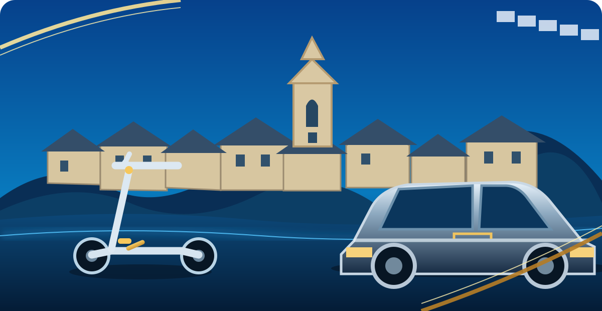

POLICIA
LOCAL
LOCAL
POLICIA LOCAL
La Palma de Cervelló

Eina de suport operatiu · Contrasta sempre la normativa i els registres oficials vigents
Mòdul
Control
Consulta ràpida
Introdueix les dades disponibles per preparar la comprovació.
Registrar un control
Les dades s'emmagatzemen únicament en aquest dispositiu i navegador.
Guia de comprovació
Normativa i fonts oficials
Consulta sempre el text consolidat i la versió vigent. Els enllaços següents són punts d'accés a fonts oficials; comprova l'aplicabilitat de cada disposició abans d'actuar.
Registre del dispositiu